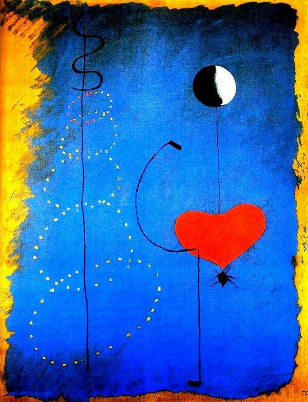

Joan Miro is a famous Spanish painting, one of the greatest genius of Surrealism. He is a well-known almighty artist in the 20th century. He initiated a series of subconscious symbols and became a representative of "Organic Surrealism". He was praised as "the most radical surrealist" by Breton and Freud.